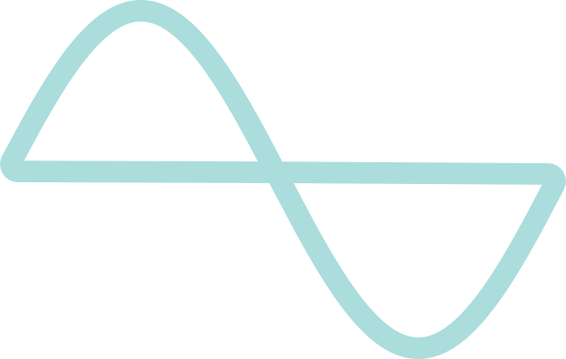

Engineering Power Quality
An end to end power quality engineering company.
We Measure What Others Miss.
Our service team measures your electrical system. We then generate a report, design and install the solution with AMC support, so your facility runs with no extra energy charges and no production downtime, while system efficiency goes up.

Precision Starts with
Diagnosis.
Yansa engineers power quality for you. Through measurement-led diagnosis, we eliminate harmonics, power factor penalties, and voltage instability, cutting energy costs, improving system efficiency, and protecting production uptime.
A team of doctorates in power electronics, backed by engineers and associates.
See how YanQ worksSymptoms precede failure. Always.
Most industrial facilities experience at least one of these. Few connect them to the same root cause.
Increased downtime
Harmonic currents overload protective devices beyond their rated threshold. The breaker trips. The root cause stays.
Equipment failure
Distorted waveforms increase I²R losses in motors and transformers. Heat builds where it should not, and equipment fails early.
Rising kVAh billing
Poor power factor increases reactive power demand. Utilities bill for it whether you notice it or not.
Decreased efficiency of the system
Harmonic losses and resonance stress capacitor banks and cables beyond design limits. Energy is wasted and the whole system runs less efficiently.
Which loads cause these? Know Your Loads
These aren't anomalies. They are signals from a system under stress. Resolving them requires more than a quick fix it requires the kind of diagnostic precision that only dedicated power quality engineering can deliver.
Why Yansa?
Where most vendors arrive with a product, Yansa arrives with a process, one that begins with measurement and ends with certainty.
Measure.
Calibrated on-site monitoring captures how your electrical system really behaves across full operating cycles, load by load.
Explore YanQSolve.
Our engineers turn that evidence into the right solution, then design, supply, install and commission it themselves.
See SolutionsSupport.
After handover we verify the result, track performance and respond to any issue, so the improvement lasts.
Our ServicesCase Studies
Every engagement begins with a system under stress. These are what happened when we traced it to its source.
Placeholder. Summary copy for this case study goes here. Replace with the real text when you have it.
Discuss a similar problemPlaceholder. Summary copy for this case study goes here. Replace with the real text when you have it.
Discuss a similar problemPlaceholder. Summary copy for this case study goes here. Replace with the real text when you have it.
Discuss a similar problem